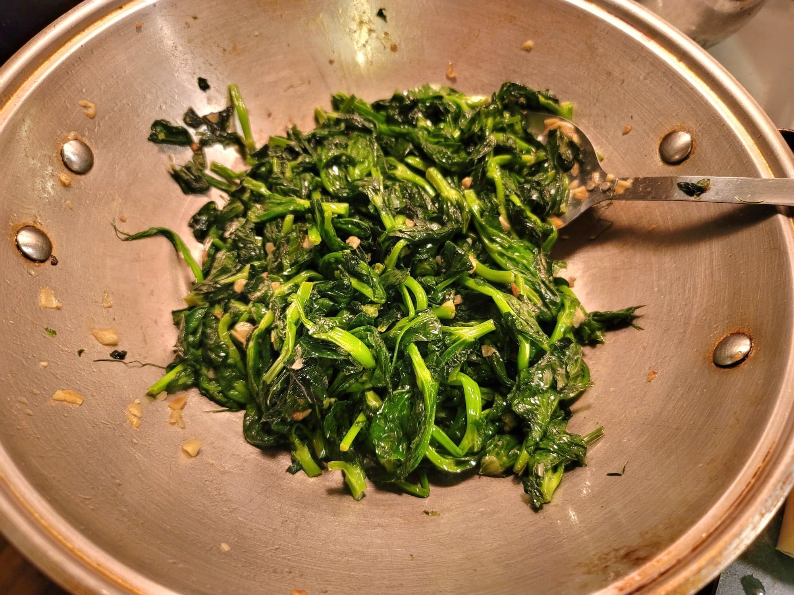

Chao Dou Miao (Pea Tips Stir-Fry)

Ingredients:
- 1 lb Pea tips
- 3-4 tbsp Canola oil
- 5 cloves Garlic, minced
- 1/2 tsp Salt
- 1/4 tsp White pepper
- 1 tsp Sesame oil
Instructions:
- Heat the oil in a wok over high heat. Add the garlic and stir-fry for about 20 seconds, or until fragrant.
- Add in the pea tips and stir-fry until they begin to wilt. Then add in the salt, pepper, and sesame oil and continue to stir-fry until the pea tips are cooked completely. Serve immediately.